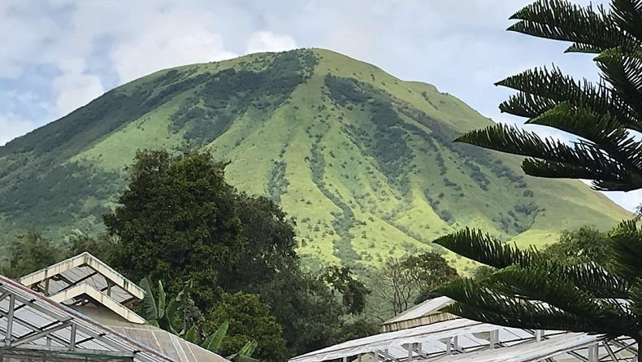
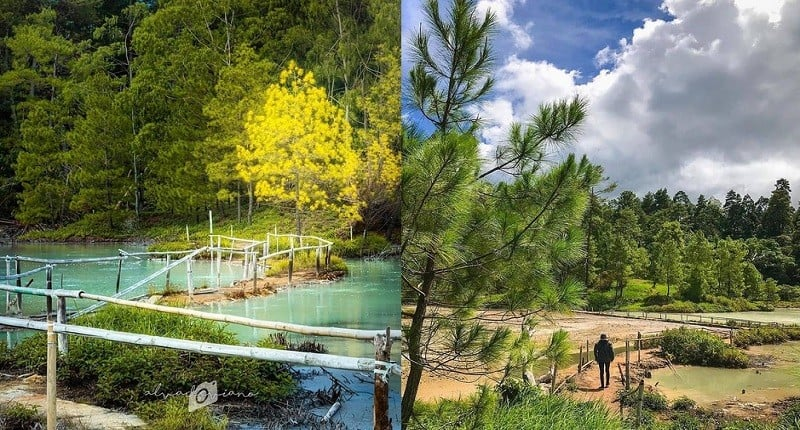

Kota Bunga yang menjadi daerah penghasil bunga terbesar di Indonesia.
Selamat datang di website Pesona Kota Tomohon, Sulawesi Utara
Deskripsi
Kota Tomohon adalah kota di provinsi Sulawesi Utara, Indonesia, yang
merupakan enklave dari Kabupaten Minahasa. Sebelum tahun 2003,
Tomohon merupakan salah satu kecamatan di Kabupaten Minahasa. Dalam
perkembangannya, Tomohon mengalami kemajuan, sehingga ada aspirasi
dari warga Tomohon untuk meningkatkan status Tomohon menjadi sebuah
kota.
Sejarah
Tomohon sejak dahulu telah dituliskan dalam beberapa catatan
sejarah. Salah satunya terdapat dalam karya etnografis Pendeta N.
Graafland yang ketika pada tanggal 14 Januari 1864 di atas kapal
Queen Elisabeth, ia menuliskan tentang suatu negeri yang bernama
Tomohon yang dikunjunginya pada sekitar tahun 1850.
Menurut beberapa sumber, Tomohon asal kata (Tou mu'ung) dalam bahasa
tombulu. Dikatakan bahwa Tomohon adalah salah satu daerah yang
termasuk dalam etnis tombulu, ialah salah satu dari delapan etnis
asli minahasa. Perkembangan peradaban dan dinamika penyelenggaraan
pembangunan dan kemasyarakatan dari tahun ke tahun menjadikan
Tomohon sebagai salah satu ibu kota kecamatan di Kabupaten Minahasa.
Geografis

Kota Tomohon terletak di ketinggian kira-kira 900-1100 meterdari
permukaan laut (dpl), diapit oleh 2 gunung berapi aktif, yaitu
Gunung Lokon (1.580 m) dan Gunung Mahawu (1.311 m). Suhu di Kota
Tomohon pada waktu siang mampu mencapai 30 derajat Celsius dan 18-22
derajat Celsius pada malam hari.
Wisata
Gunung Lokon
Terletak di sebelah barat laut Kota Tomohon dengan ketinggian
1.580 meter. Gunung berapi ini luar biasa aktif. Menyajikan
panorama pegunungan dengan kawah yang begitu indah. Waktu yang
tepat untuk memulai perjalanan dari Kakaskasen, Tomohon adalah
sekitar jam 7 pagi, dan dapat tiba di kawah pada saat udara pagi
masih sejuk.
Danau Linouw
Danau kecil yang berjarak 8,5 KM dari pusat kota ini unik karena
mengandung kadar belerang yang tinggi. Memiliki warna yang selalu
berubah tergantung pada sudut pandang dan pencahayaan danau. Di
sekitar danau ini terdapat satwa endemik berupa burung blibis dan
serangga yang oleh penduduk setempat dinamakan "sayok" atau
"komo". Serangga unik yang hidup di air tetapi bersayap dan bisa
terbang ini menjadi konsumsi penduduk setempat. Kadang-kadang
terdengar kicauan burung burung kecil dan burung putih besar yang
melintasi danau.
Hutan Pinus Wisata di Lahendong

Kawasan hutan pinus yang mengitari hamparan kolam. Yang
dikelilingi sumber mata air panas alami bercampur dengan lumpur
belerang dan tempat pemandian air panas alami. Ini merupakan
tempat yang ideal untuk mengusir kepenatan di kala senja. Kawasan
ini menjajakan berbagai kudapan khas Kota Tomohon seperti pisang
goreng, jagung rebus disajikan dengan sambal atau dabu-dabu.